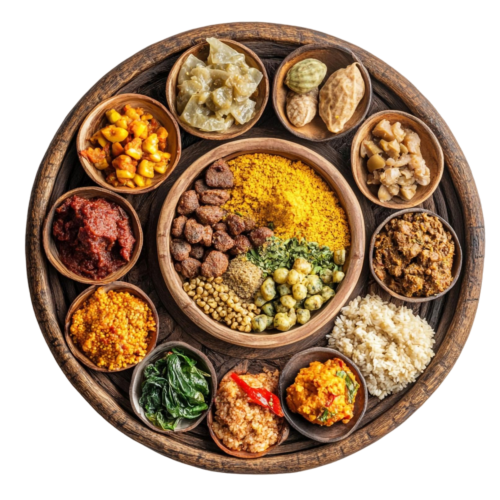

Search For
Recipe!
From authentic Thai delights to global cuisines, find easy-to-follow recipes and meal inspirations right here. Simply type what you're craving into the search bar below and let Quickbite guide your culinary adventure!
